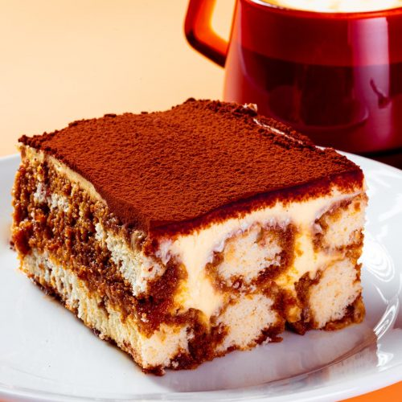

Odin Recipes

Description
Tiramisu is an Italian dessert made of ladyfinger pastries dipped in coffee, layered with a whipped mixture of eggs, sugar and mascarpone and flavoured with cocoa.
Ingredients
- Coffee
- Ladyfinger Cookies
- Mascarpone
- Eggs
- Cocoa Powder
- Sugar
Instructions
- Soak your ladyfinger cookies in coffee.
- In a large bowl, mix and then whip together your mascarpone, eggs, and sugar until combined and fluffy.
- Assemble the tiramisu by laying out alternating layers of coffee soaked cookies and your mascarpone mixture.
- Dust the top of the tiramisu with cocoa powder until completely covered.
- Let chill overnight.
- Serve and enjoy!